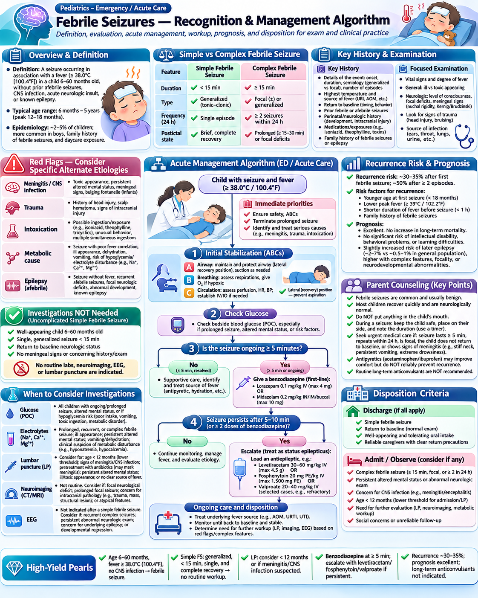
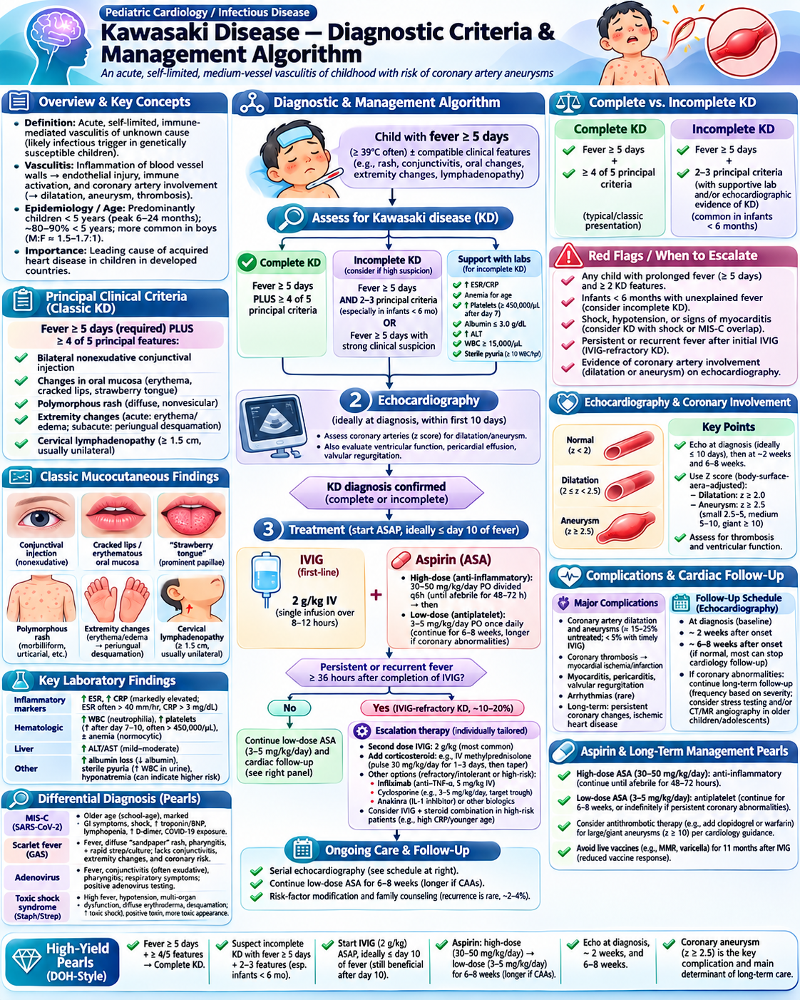
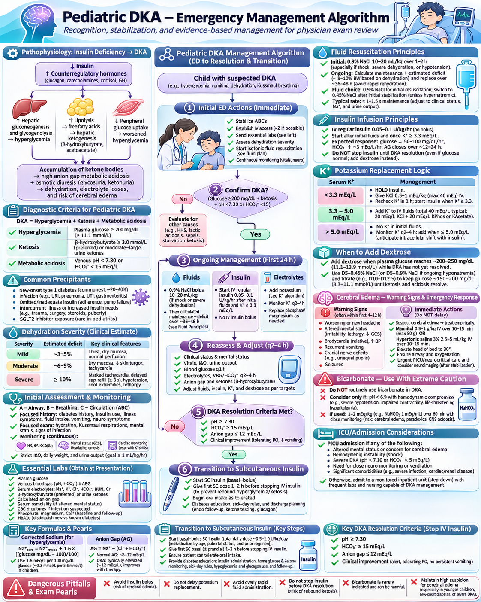
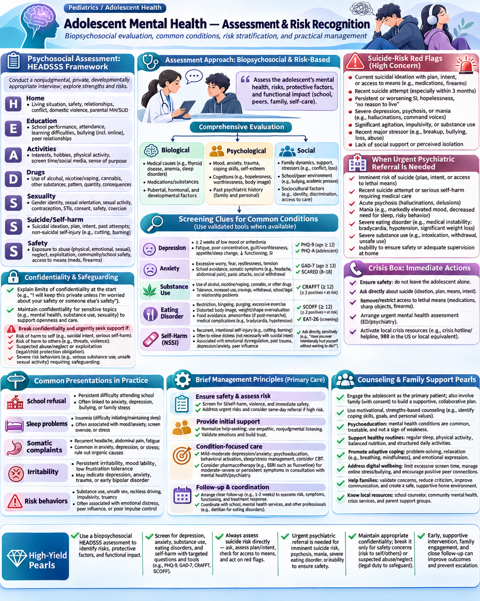

Day 20 — Pediatrics II: Emergencies & High-Yield Syndromes
Febrile seizures, meningitis, Kawasaki disease, IgA vasculitis, childhood rashes, pediatric DKA, congenital heart disease, child safeguarding, and adolescent mental health — built for physician-level DOH exam preparation.
90 questions
1. Febrile Seizures
Physician-level pediatrics review for DOH-style clinical decision making.
Definition, classification & epidemiology
- Febrile seizure: seizure occurring with fever ≥38°C in a neurologically healthy child typically 6–60 months, without CNS infection, acute metabolic derangement, prior afebrile seizure, or known epilepsy.
- Simple: generalized, <15 min, single seizure in 24 h, complete neurologic recovery. Complex: focal, ≥15 min, recurrent within 24 h, or prolonged/focal postictal deficit.
- Peak incidence is around 12–18 months. Recurrence occurs in roughly one-third; risk is higher with younger age, family history, lower fever at seizure, and short fever duration before the event.
Immediate ED management
- ABCs, lateral recovery position, oxygen if hypoxemic, suction as needed, cardiorespiratory monitoring, and bedside glucose for prolonged seizure or altered mental status.
- If seizure persists ≥5 min, treat as an active prolonged seizure: benzodiazepine first line (e.g., lorazepam 0.1 mg/kg IV, max 4 mg; or intranasal/buccal/IM midazolam per local protocol).
- Persistent seizure after adequate benzodiazepine dosing requires status-epilepticus escalation (e.g., levetiracetam/fosphenytoin/valproate according to age, contraindications, and local protocol).
Work-up: when to test and when not to
- A well-appearing child with a simple febrile seizure who returns to baseline generally needs no routine CBC/electrolytes, EEG, CT/MRI, or lumbar puncture. Evaluate the source of fever instead.
- Consider glucose/electrolytes for prolonged or recurrent seizures, persistent altered mental status, vomiting/dehydration, toxic ingestion, or metabolic risk.
- Lumbar puncture is driven by suspicion for meningitis/encephalitis, not by the seizure label alone. Neuroimaging is reserved for focal deficit, trauma, signs of raised ICP, persistent encephalopathy, or other atypical features.
Red flags & disposition
- Reconsider the diagnosis when there is toxic appearance, meningism, bulging fontanelle, persistent altered mental status, focal deficit, afebrile seizures, developmental regression, trauma, or possible intoxication.
- Discharge is reasonable after a simple seizure if the child returns to baseline, is well appearing, tolerates intake, fever source is addressed, and caregivers understand return precautions.
- Observe/admit for complex seizures, persistent neurologic abnormality, CNS infection concern, recurrent seizures, diagnostic uncertainty, or unreliable follow-up.
DOH-style exam traps
- Antipyretics improve comfort but do not reliably prevent recurrence. Long-term antiseizure prophylaxis is not recommended for simple febrile seizures.
- A child with fever and seizure who remains confused is not automatically “postictal”; meningitis, encephalitis, hypoglycemia, toxic ingestion, and status epilepticus must be considered.
- Complex febrile seizure increases concern for underlying pathology but does not automatically mandate CT if the child returns to baseline with a normal neurologic examination.
🖼️ Febrile Seizures Algorithm
Professional Day 20 visual review
📚 Guidelines & Academic Sources
Use these sources for exam study and clinical framework. Local facility protocols, formulary, antimicrobial resistance patterns, and DOH requirements take precedence where applicable.
2. Pediatric Meningitis
Physician-level pediatrics review for DOH-style clinical decision making.
Recognition & age-specific microbiology
- Bacterial meningitis is a medical emergency. Presentations include fever, irritability/lethargy, poor feeding, vomiting, headache, neck stiffness, altered mental status, seizures, bulging fontanelle in infants, or petechiae/purpura.
- Pathogens vary by age: neonates—GBS, E. coli, Listeria; older infants/children—S. pneumoniae, N. meningitidis and Hib in under-immunized children. Consider HSV in neonates/young infants with vesicles, seizures, hepatitis, or maternal HSV risk.
- Young infants may lack classic meningism; apnea, temperature instability, poor feeding, high-pitched cry, or unexplained lethargy may be the only clues.
First hour: stabilization and empiric treatment
- ABCs first. Treat shock with cautious isotonic boluses and vasoactive support as indicated; control seizures and correct hypoglycemia. Obtain blood cultures if this does not delay therapy.
- Do not delay empiric IV antibiotics for lumbar puncture or neuroimaging when bacterial meningitis is suspected. Regimen depends on age and resistance patterns; common post-neonatal empiric therapy is a third-generation cephalosporin + vancomycin.
- Dexamethasone may be considered before or with the first antibiotic dose for suspected bacterial meningitis according to age/etiology/local guideline; benefit is clearest for Hib and may reduce hearing sequelae.
Lumbar puncture & CSF interpretation
- Perform LP when the child is hemodynamically stable with no major contraindication. Delay LP if there is shock, respiratory instability, significant coagulopathy, focal neurologic deficit, severely depressed consciousness, or concern for mass effect/raised ICP.
- Bacterial CSF classically shows neutrophilic pleocytosis, high protein, low glucose; viral meningitis usually shows lymphocytic pleocytosis with normal glucose; TB often has lymphocytes, high protein, and low glucose.
- Prior antibiotics can reduce culture yield and partially modify the CSF pattern; PCR can remain useful.
Complications, isolation & prophylaxis
- Complications include hearing loss, seizures, subdural effusion/empyema, hydrocephalus, stroke, focal deficits, DIC, shock, and neurodevelopmental impairment.
- Use droplet precautions for suspected meningococcal disease and Hib until adequate effective therapy has been given per infection-control policy.
- Close contacts of meningococcal disease—and selected Hib contacts—require chemoprophylaxis based on public-health guidance.
Exam traps
- Normal early CT does not exclude meningitis and is not a prerequisite to LP in every child.
- Petechiae/purpura + fever + toxicity = treat as meningococcemia/sepsis until proven otherwise.
- In suspected HSV encephalitis/meningoencephalitis, add acyclovir promptly while testing is pending.
🖼️ Pediatric Meningitis Algorithm
Professional Day 20 visual review
📚 Guidelines & Academic Sources
Use these sources for exam study and clinical framework. Local facility protocols, formulary, antimicrobial resistance patterns, and DOH requirements take precedence where applicable.
3. Kawasaki Disease
Physician-level pediatrics review for DOH-style clinical decision making.
Diagnosis: complete & incomplete Kawasaki disease
- Kawasaki disease is an acute medium-vessel vasculitis, usually in children <5 years, with major concern for coronary artery aneurysm.
- Classic features: prolonged fever plus bilateral non-exudative conjunctivitis, oral changes (cracked lips/strawberry tongue), polymorphous rash, extremity erythema/edema or later periungual peeling, and usually unilateral cervical lymphadenopathy.
- Current AHA guidance emphasizes early diagnosis; complete KD can be diagnosed before day 5 in a compatible child with enough principal features, while incomplete KD requires supportive labs/echo evidence, particularly in infants.
Investigations & echocardiography
- Supportive findings include high CRP/ESR, neutrophilia, normocytic anemia, hypoalbuminemia, elevated ALT, sterile pyuria, and thrombocytosis after the first week.
- Obtain echocardiography at diagnosis and repeat according to coronary findings and cardiology guidance. Assess coronary Z-scores, ventricular function, pericardial effusion, and valvular regurgitation.
- Normal early echocardiography does not exclude Kawasaki disease if the clinical picture is strong.
Treatment
- IVIG 2 g/kg is standard first-line therapy, ideally within the first 10 days and as soon as diagnosis is made.
- Aspirin is used during the acute inflammatory phase and then at low antiplatelet dose after defervescence; exact high-dose strategy varies among guidelines and centers.
- Persistent/recurrent fever ≥36 h after IVIG suggests IVIG resistance; management may include a second IVIG dose, corticosteroids, infliximab, cyclosporine, or other targeted therapy under pediatric cardiology/rheumatology guidance.
Differential & high-risk features
- Differentials include adenovirus, scarlet fever, toxic shock, systemic JIA, measles, drug reactions, and MIS-C. Exudative conjunctivitis/pharyngitis, oral ulcers, or vesicular rash are less typical for KD.
- High-risk features for coronary aneurysm include young age (especially <6 months), significant inflammation, and coronary dilation on initial echo.
- Shock, myocarditis, persistent fever after IVIG, or coronary abnormalities require escalation and specialist care.
Exam pearls
- Fever + mucocutaneous findings in an infant should trigger consideration of incomplete KD even when the full classic criteria are absent.
- Coronary aneurysm risk is the reason timely IVIG matters.
- After IVIG, live vaccines such as MMR/varicella may need to be deferred because passive antibodies can reduce vaccine response; follow local immunization guidance.
🖼️ Kawasaki Disease Algorithm
Professional Day 20 visual review
📚 Guidelines & Academic Sources
Use these sources for exam study and clinical framework. Local facility protocols, formulary, antimicrobial resistance patterns, and DOH requirements take precedence where applicable.
4. IgA Vasculitis (HSP)
Physician-level pediatrics review for DOH-style clinical decision making.
Core recognition
- IgA vasculitis (Henoch–Schönlein purpura) is the most common childhood systemic vasculitis. It is an IgA immune-complex small-vessel vasculitis, commonly following a respiratory infection.
- Classic spectrum: palpable non-blanching purpura (usually legs/buttocks) + arthralgia/arthritis + abdominal pain/GI involvement + renal involvement.
- Platelet count is usually normal—this helps separate IgA vasculitis from ITP and HUS.
Evaluation & renal monitoring
- Diagnosis is usually clinical. Obtain blood pressure and urinalysis in every suspected case. If proteinuria is present, quantify with urine protein:creatinine ratio and check renal function.
- Consider CBC, electrolytes/creatinine, albumin, inflammatory markers, coagulation studies, and additional tests when disease is moderate/severe or diagnosis is uncertain.
- Renal disease may appear after the rash. Repeat urinalysis and blood pressure over subsequent months; persistent proteinuria, hypertension, or rising creatinine requires nephrology input.
GI, joint & scrotal complications
- Abdominal pain may be severe and can precede the rash. Important complications include GI bleeding and intussusception; sudden colicky pain/vomiting or “currant jelly” stool requires urgent imaging.
- Arthritis is usually transient and non-erosive, commonly affecting knees/ankles.
- Scrotal pain/swelling can occur, but testicular torsion remains a time-critical differential.
Treatment
- Most children need supportive treatment: hydration, acetaminophen, rest, and careful renal/GI follow-up.
- Corticosteroids may be used for significant abdominal pain, severe joint symptoms, or selected renal/scrotal disease; they do not eliminate the need for renal surveillance.
- Severe nephritis/nephrotic syndrome, declining renal function, GI ischemia/bleeding, inability to hydrate, or diagnostic uncertainty may require admission and subspecialty care.
Exam traps
- Purpura + abdominal pain is not automatically HSP: meningococcemia, ITP, HUS, DIC, leukemia, and other vasculitides can be life-threatening mimics.
- Normal urinalysis at presentation does not end renal follow-up.
- NSAIDs may worsen renal/GI risk and should be avoided when renal involvement or significant GI bleeding is present.
🖼️ IgA Vasculitis (HSP) Infographic
Professional Day 20 visual review
📚 Guidelines & Academic Sources
Use these sources for exam study and clinical framework. Local facility protocols, formulary, antimicrobial resistance patterns, and DOH requirements take precedence where applicable.
5. Common Childhood Rashes
Physician-level pediatrics review for DOH-style clinical decision making.
Pattern-based approach
- First decide whether the child is toxic and whether the eruption is blanching vs non-blanching, maculopapular vs vesicular, urticarial, crusted, scaly, blistering, or desquamating.
- Use distribution and associated symptoms: cephalocaudal spread, palms/soles, mucosal lesions, flexures, diaper folds, honey-colored crusts, strawberry tongue, cough/coryza/conjunctivitis, and timing of fever relative to rash.
- Always incorporate immunization status, exposure/outbreak history, travel, new medications, and immune status.
High-yield exanthems
- Measles: high fever + cough/coryza/conjunctivitis + Koplik spots; rash begins at hairline/face then spreads downward. Airborne isolation and public-health notification are critical.
- Varicella: pruritic vesicles in multiple stages (“dew drops”) with truncal predominance. Roseola: high fever for several days, then rash appears as fever resolves.
- Erythema infectiosum: slapped cheeks followed by lacy rash; pregnancy exposure matters. HFMD: oral ulcers + hand/foot/palm/sole lesions.
Bacterial / inflammatory / allergic patterns
- Scarlet fever: GAS pharyngitis + sandpaper rash + strawberry tongue/Pastia lines; treat confirmed GAS.
- Impetigo: honey-colored crusts; topical mupirocin for limited disease, oral therapy for extensive disease as appropriate.
- Atopic dermatitis: chronic pruritic relapsing eczema—emollients, trigger control, topical corticosteroids. Urticaria: transient migratory wheals—non-sedating H1 antihistamine first line.
Rash red flags
- Non-blanching petechiae/purpura with fever or toxicity → meningococcemia/sepsis until proven otherwise.
- Mucosal erosions, targetoid lesions, blistering or epidermal detachment → consider SJS/TEN or other severe cutaneous adverse reaction.
- Diffuse tenderness/desquamation with systemic illness → consider staphylococcal scalded skin syndrome, toxic shock, or Kawasaki disease depending on age/context.
Exam traps
- Roseola rash appears after defervescence; measles rash occurs while the child remains febrile and ill.
- Varicella lesions occur in different stages simultaneously.
- Irritant diaper dermatitis typically spares folds; candidal diaper dermatitis often involves folds and may have satellite pustules.
🖼️ Common Childhood Rashes Infographic
Professional Day 20 visual review
📚 Guidelines & Academic Sources
Use these sources for exam study and clinical framework. Local facility protocols, formulary, antimicrobial resistance patterns, and DOH requirements take precedence where applicable.
6. Pediatric DKA
Physician-level pediatrics review for DOH-style clinical decision making.
Diagnostic criteria & severity
- Pediatric DKA = diabetes/hyperglycemia + ketosis + metabolic acidosis. Typical criteria: glucose ≥200 mg/dL (11.1 mmol/L), venous pH <7.30 or bicarbonate <15 mmol/L, with β-hydroxybutyrate ≥3 mmol/L or moderate/large ketones.
- Severity is based primarily on acidosis. Assess mental status, perfusion, dehydration, Kussmaul breathing, vomiting, abdominal pain, and precipitant (new diabetes, infection, missed insulin/pump failure).
- Important calculations include anion gap and corrected sodium; rising measured sodium during glucose decline is expected and helps assess water balance.
Fluids, insulin & potassium
- Initial isotonic crystalloid is used to restore perfusion; avoid overly rapid fluid administration. Estimate maintenance + deficit and replace gradually per pediatric DKA protocol.
- Start IV regular insulin after initial fluid therapy, commonly 0.05–0.1 units/kg/h; do not give an insulin bolus. Continue insulin until ketosis/acidosis resolves, adding dextrose when glucose falls.
- If K⁺ is severely low (<3.3 mmol/L), replace potassium and delay insulin until potassium is safe. Otherwise add potassium to fluids once urine output is established and potassium is not high.
Monitoring & resolution
- Monitor hourly glucose and frequent electrolytes/venous gas/ketones, mental status, fluid balance, urine output, and cardiac rhythm when potassium is abnormal.
- Add dextrose when glucose approaches ~200–250 mg/dL while acidosis/ketosis persists; the goal is to continue insulin safely until DKA resolves.
- Resolution requires correction of acidosis/ketosis—not merely a normal glucose. Transition to subcutaneous basal-bolus insulin with overlap before stopping IV insulin.
Cerebral injury & dangerous pitfalls
- Warning signs: new/worsening headache, altered mental status, recurrent vomiting, bradycardia relative to clinical state, hypertension, cranial nerve abnormality, or seizure.
- If cerebral edema/injury is suspected, treat immediately with hyperosmolar therapy (mannitol or 3% saline per protocol), elevate head, secure airway/oxygenation, reduce unnecessary fluid, and involve PICU. Do not wait for CT before treatment.
- Bicarbonate is generally avoided; consider only exceptional life-threatening situations such as profound acidosis with hemodynamic compromise or severe hyperkalemia.
DOH-style exam traps
- Never stop insulin just because glucose normalizes; add dextrose and continue until ketoacidosis resolves.
- “Normal” serum potassium at presentation can hide major total-body potassium depletion.
- Abdominal pain in DKA may mimic an acute abdomen and often improves with correction; persistent focal pain after metabolic improvement needs separate evaluation.
🖼️ Pediatric DKA Algorithm
Professional Day 20 visual review
📚 Guidelines & Academic Sources
Use these sources for exam study and clinical framework. Local facility protocols, formulary, antimicrobial resistance patterns, and DOH requirements take precedence where applicable.
7. Congenital Heart Disease Basics
Physician-level pediatrics review for DOH-style clinical decision making.
Framework: shunts, obstruction & mixing
- Classify congenital heart disease by physiology: left-to-right shunts (often acyanotic with increased pulmonary flow), right-to-left lesions (cyanosis), obstructive lesions, and mixing/parallel-circulation lesions.
- As pulmonary vascular resistance falls after birth, large L→R shunts may present at 2–8 weeks with tachypnea, poor feeding, diaphoresis, failure to thrive, recurrent respiratory infections, hepatomegaly, and heart failure.
- Critical duct-dependent lesions may deteriorate when the ductus closes, causing shock or profound cyanosis.
High-yield lesions & murmurs
- VSD: harsh holosystolic murmur at LLSB; large defects → HF. ASD: fixed split S2 + systolic flow murmur. PDA: continuous machinery murmur + bounding pulses/wide pulse pressure.
- Coarctation: upper-limb hypertension, weak/delayed femoral pulses, arm-leg BP gradient; neonate can present in shock when duct closes.
- TOF: VSD + RV outflow obstruction + overriding aorta + RVH; cyanosis/tet spells. TGA: parallel circulation with severe neonatal cyanosis, usually duct/mixing dependent.
Critical CHD recognition
- Pulse-ox screening uses preductal (right hand) and postductal (foot) saturation. Persistent low saturation or significant hand-foot difference requires urgent evaluation.
- In a cyanotic or shocked neonate with suspected duct-dependent CHD, stabilize ABCs and consider prostaglandin E1 (alprostadil) while urgently arranging echocardiography/cardiology; apnea is an important adverse effect.
- CXR/ECG can provide clues but echocardiography defines anatomy and physiology.
Emergency clues
- Central cyanosis that does not normalize with oxygen, shock with weak femoral pulses, severe tachypnea/feeding difficulty in an infant, or a positive CCHD screen are urgent.
- Hypercyanotic (“tet”) spells: calm the child, knee-chest position, oxygen, fluids, and urgent specialist-directed therapy.
- Absence of a murmur does not exclude critical CHD—some severe lesions are quiet.
Exam traps
- Coarctation is acyanotic but obstructive; do not force every lesion into a shunt category.
- TGA produces severe cyanosis because systemic and pulmonary circulations run in parallel; survival depends on mixing (ASD/VSD/PDA).
- An infant with “sepsis-like” shock at several days of age may have a duct-dependent systemic lesion.
🖼️ Congenital Heart Disease Basics Infographic
Professional Day 20 visual review
📚 Guidelines & Academic Sources
Use these sources for exam study and clinical framework. Local facility protocols, formulary, antimicrobial resistance patterns, and DOH requirements take precedence where applicable.
8. Child Abuse / Neglect & Safeguarding
Physician-level pediatrics review for DOH-style clinical decision making.
Recognition & history
- Consider abuse/neglect when the injury pattern, developmental ability, history, delay in seeking care, or repeated presentations do not fit together. Any bruise in a non-mobile infant is concerning.
- High-risk patterns include protected-area bruising (ears, neck, torso, buttocks/genital area), patterned marks, multiple injuries at different healing stages, unexplained fractures, abusive head trauma, suspicious burns, or sentinel injuries.
- Ask neutral, open-ended questions; document who provided the history, timing, mechanism, and exact wording of important statements.
Immediate safety & stabilization
- Treat life-threatening injury first: ABCs, bleeding, seizures, head injury, fractures, and pain. Safety concerns should not delay necessary medical stabilization.
- If there is reasonable suspicion, involve the facility child-protection/safeguarding pathway early. Do not discharge the child to an unsafe situation while protection planning is unresolved.
- Physical examination should be complete, respectful, objective, and limited to clinically necessary contact; use a chaperone and follow local consent/safeguarding rules.
Targeted evaluation
- Investigations depend on age and suspected abuse type. In young children with suspected physical abuse, skeletal survey is a key test; follow-up survey may identify occult healing fractures.
- Suspected abusive head trauma may require urgent CT for acute injury, MRI for further characterization, and ophthalmologic examination for retinal hemorrhage when indicated.
- Use labs selectively to evaluate occult abdominal injury, bleeding disorders, anemia, coagulopathy, or mimics such as osteogenesis imperfecta/rickets.
Documentation & reporting
- Document injuries objectively: exact location, size, shape, color, tenderness, pattern, and body diagrams/photographs according to policy. Avoid conclusory or judgmental wording.
- The 2026 Abu Dhabi DOH Child Protection Policy requires standardized internal reporting/documentation mechanisms, facility child-protection structures, and communication with designated external authorities through established pathways.
- Mandatory reporting requirements and exact contact pathways are jurisdiction-specific; follow DOH/facility policy and escalate immediately when a child is at risk.
Exam traps & mimics
- Normal coagulation studies do not exclude abuse; conversely, bruising disorders must be considered before attributing bruises to abuse.
- Sentinel injuries may precede severe abuse—small oral injury or bruise in a non-mobile infant should not be dismissed.
- The physician’s role is not to “prove guilt”; it is to recognize concern, stabilize, document, report appropriately, and protect the child through multidisciplinary evaluation.
🖼️ Child Abuse / Neglect & Safeguarding Algorithm
Professional Day 20 visual review
📚 Guidelines & Academic Sources
Use these sources for exam study and clinical framework. Local facility protocols, formulary, antimicrobial resistance patterns, and DOH requirements take precedence where applicable.
9. Adolescent Mental Health
Physician-level pediatrics review for DOH-style clinical decision making.
HEADSSS / biopsychosocial assessment
- Interview the adolescent privately for part of the visit using a structured framework: Home, Education, Activities, Drugs, Sexuality, Suicide/self-harm, and Safety. Also explore strengths, protective factors, sleep, nutrition, bullying, and digital/social-media stressors.
- Start by explaining confidentiality and its limits: privacy is preserved unless there is significant risk of harm, abuse/neglect, or another legally reportable safety issue.
- Assess functional impact—school attendance/performance, relationships, self-care, sleep, appetite, physical activity, and risk behavior.
Common conditions & screening
- Depression: ≥2 weeks low mood/irritability or anhedonia plus neurovegetative/cognitive symptoms; tools such as PHQ-A/PHQ-9 can support but do not replace clinical assessment.
- Anxiety: excessive worry, panic, avoidance, somatic complaints, school refusal; GAD-7/SCARED can help. Substance use: ask nonjudgmentally about nicotine/vaping, alcohol, cannabis, stimulants and other drugs; CRAFFT is commonly used.
- Eating disorder clues: restriction, binge/purge behavior, excessive exercise, distorted body image, amenorrhea, bradycardia, hypotension, or orthostasis; medical instability requires urgent care.
Suicide/self-harm risk
- Ask directly about suicidal thoughts, intent, plan, access to means, prior attempts, nonsuicidal self-injury, psychosis, intoxication, acute stressors, and protective factors.
- High concern: current plan/intent/access to lethal means, recent attempt, severe hopelessness, command hallucinations, mania/psychosis, severe intoxication, or inability to ensure safe supervision.
- For imminent risk: do not leave the adolescent alone, restrict access to lethal means, obtain urgent mental-health assessment, and use local crisis/emergency pathways.
Initial management in primary care
- Prioritize safety, empathic nonjudgmental engagement, psychoeducation, sleep/routine restoration, school/family support, and condition-specific referral/therapy.
- Mild–moderate depression/anxiety often responds to psychotherapy (e.g., CBT); pharmacotherapy such as an SSRI may be appropriate for moderate–severe/persistent disease with careful monitoring and mental-health collaboration.
- Arrange close follow-up after starting treatment or when risk is evolving; document risk assessment, safety plan, supports, and return precautions.
DOH/local context & exam traps
- DOH Abu Dhabi guidance for child mental health in primary care emphasizes risk/protective factors, common disorders, recognition, and referral pathways for healthcare professionals working with children.
- Do not assume irritability is “normal adolescence”—it may reflect depression, anxiety, trauma, substance use, sleep disorder, or emerging bipolar disorder.
- Confidentiality is therapeutic, but it is not absolute when immediate safety or safeguarding concerns are present.
🖼️ Adolescent Mental Health Infographic
Professional Day 20 visual review
📚 Guidelines & Academic Sources
Use these sources for exam study and clinical framework. Local facility protocols, formulary, antimicrobial resistance patterns, and DOH requirements take precedence where applicable.
📊 External QBank Progress — Day 20
Use this for any external pediatrics QBank block. It is separate from the 90 original questions on this page.